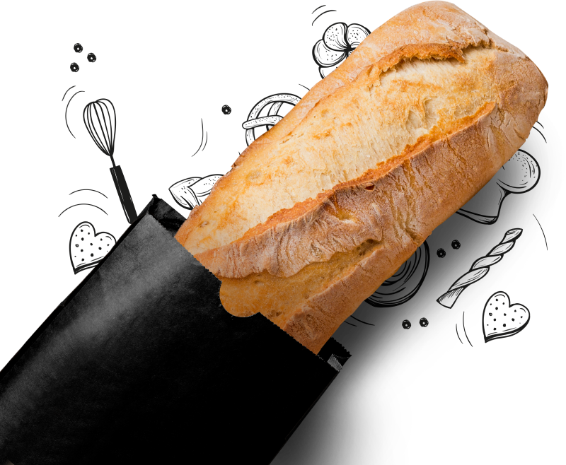

Fresh breads
handcrafted daily
Nibh venenatis cras sed felis eget velit aliquet sagittis id. Tellus pellentesque eu tincidunt tortor aliquam nulla.
READ MORENibh venenatis cras sed felis eget velit aliquet sagittis id. Tellus pellentesque eu tincidunt tortor aliquam nulla.
READ MORESample text. Click to select the text box. Click again or double click to start editing the text.
MoreSample text. Click to select the text box. Click again or double click to start editing the text.
MoreSample text. Click to select the text box. Click again or double click to start editing the text.
MoreSample text. Click to select the text box. Click again or double click to start editing the text.
MoreFlour, water, sea salt, and leavening: four simple ingredients that—when mixed, shaped, fermented, and baked—make one of the most basic foods that has nourished humans for thousands of years. Since such few ingredients are involved, two things set great bread apart: quality ingredients and time.
READ MOREUnbleached organic wheat flour, whole rye flour, water, sea salt, yeast
Naturally leavened baguette made using the Five Points Levain dough. This baguette is crustier and chewier than the Classic Baguette
Naturally leavened bread made using the French Country dough with the additions of local Georgia pecans and Thompson raisins
Everyday table loaf made using the Classic Baguette dough
Naturally leavened bread made using the French Country dough with the additions of millet, quinoa, rolled oats, flax seeds, and sunflower seeds
Whole rye flour, cracked rye berries, water, natural leaven culture made with rye flour, pumpkin seeds, sunflower seeds, barley malt syrup, sea salt
Unbleached organic wheat flour, whole rye flour, water, natural leaven culture, sea salt
Unbleached organic wheat flour, whole rye flour, water, natural leaven culture, sea salt, yeast
Naturally leavened bread made using the Sourdough Rye dough and studded with dried black currants